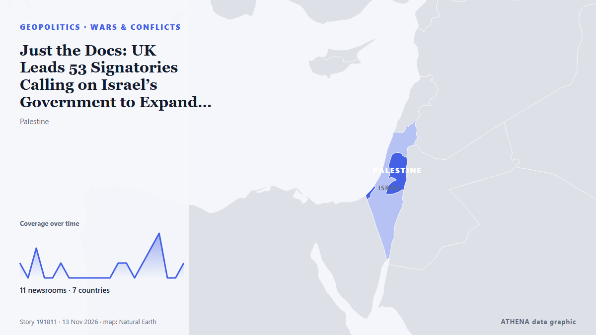

Πόλεμοι & συγκρούσεις
ΧορηγούμενοΠαρουσιάζεται από  Cybernetics and Artificial Intelligence Lab Welcome to the Cybernetics and Artificial Intelligence Laboratory, established at the Department of Business Administration of the National and Kapodistrian University of Athens. The lab is headed by Professor Dimitrios Thomakos. The lab aims to do research that can be published in top venues. Our research uses tools and methods of Artificial Intelligence, and lies in the following areas: - Forecasting - Decision making - Cyber security - Finance We are always looking forward to collaborating with exceptional students!
Cybernetics and Artificial Intelligence Lab Welcome to the Cybernetics and Artificial Intelligence Laboratory, established at the Department of Business Administration of the National and Kapodistrian University of Athens. The lab is headed by Professor Dimitrios Thomakos. The lab aims to do research that can be published in top venues. Our research uses tools and methods of Artificial Intelligence, and lies in the following areas: - Forecasting - Decision making - Cyber security - Finance We are always looking forward to collaborating with exceptional students!
| 31 Οκτ | 0 |
|---|---|
| 1 Νοε | 0 |
| 2 Νοε | 0 |
| 3 Νοε | 0 |
| 4 Νοε | 0 |
| 5 Νοε | 0 |
| 6 Νοε | 3 |
| 7 Νοε | 0 |
| 8 Νοε | 4 |
| 9 Νοε | 3 |
| 10 Νοε | 5 |
| 11 Νοε | 7 |
| 12 Νοε | 2 |
| 13 Νοε | 0 |
Οι τίτλοι των ειδήσεων παρουσιάζονται στα αγγλικά, όπως δημοσιεύτηκαν.

Just the Docs: UK Leads 53 Signatories Calling on Israel’s Government to Expand Gaza Aid
Statement: 53 countries and organizations urge Israel’s incoming government to allow rapid, unimpeded humanitarian access throughout Gaza. από Just Security
Saudi coalition says intercepted 3 Houthi missiles fired at Riyadh
Saudi-led coalition claims Houthi missile destroyed over Eastern Province The Saudi-led coalition air defences intercepted and destroyed a ballistic missile launched by the Houthis toward the… από Middle East Eye
Black Sea Security Is European Security, European Commission President Ursula von der Leyen Says in Varna
The trip comes after at least seven commercial vessels were reportedly struck by drones that many have linked to Russia. από Politico Europe
Iran will strike US bases in Europe in any war, warns Rezaei
Iranian officials have explicitly threatened in recent weeks to strike US military bases in Europe if they are used to launch attacks against Iran. από The New Arab
IDF says overnight strike on Gaza hospital targeted top Hamas commander, other operatives
According to its statement, the radical Palestinian movement "has not surrendered a single weapon" από TASS (English)
Erdogan calls Israel's war on Gaza an 'ecocide' at UN's COP31
In recent days, heavy rainfall and subsequent flooding destroyed many of the tents and makeshift shelters that Palestinian residents now live in. από The New Arab
El Salvador is exporting the ‘Bukele model’ to Haiti – but the gang offensive is a gamble for both nations
Haiti’s war on gangs is increasingly relying on a patchwork of foreign troops and private militias, making accountability more complicated. από The Conversation (global)
IAEA condemns deadly drone strikes near Ukraine nuclear plant
UN nuclear watchdog chief calls for immediate end to attacks on plant personnel, warning of risks to nuclear safety. από TRT World
Drone attack triggers fire in Russia’s Baltic port of Ust-Luga, Ukraine says it launched attack
Ust-Luga is a major oil, oil products and grain export outlet, along with other commodities. από The Straits Times
Suspected drone attack halts production at Khor Mor in Kurdistan Region of Iraq
Production at the Khor Mor gas facility in Iraq’s Kurdistan Region remains suspended after a suspected drone attack on Nov. από World Oil
US Offers Up to $20 Million Reward for Information on Iran’s Nuclear Program
WASHINGTON, Nov 7: The United States has announced a reward of up to $20 million, along with possible relocation, for information about Iran’s nuclear program, including its facili... από Arab Times
NATO jets scrambled twice after suspected drone incursions into Lithuania
Air alerts disrupt flights at two airports as officials report that at least one drone crossed Lithuanian airspace before entering Latvia. από TRT World
Iran's IRGC unveils 'new' underground ‘missile city’ amid war tensions
Iran’s Islamic Revolutionary Guard Corps (IRGC) has unveiled what it describes as a "new" underground “missile city,” displaying ballistic and cruise missiles alongside their launch systems. από Gulf News
Congo court sentences 66 soldiers to death for cowardice, mutiny
A military court in the Democratic Republic of Congo has sentenced 66 soldiers to death for cowardice and mutiny after they allegedly fled fighting with rebels. από CBS News (World)
Most Americans want new Democratic Congress to end Trump’s Iran war
Majorities of Americans want the newly elected Democratic-majority US Congress to act to end the war with Iran and to repeal tariffs put in place by President Donald Trump, signaling demand for quick… από Cyprus Mail
EU Extends Ukraine Military Training Mission to 2028 With Nearly €300M in Funding
European Union (EU) member states agreed on Monday, Nov. από Kyiv Post
Trump says Iran war ‘effectively over’ militarily, but US ready to strike again
US President Donald Trump said Monday the war with Iran was effectively over militarily but warned US forces remained “locked and loaded,” while Iran's security chief denied reports of talks with… από Iran International (English)
US seeing 'strong inclination' Ukraine war to end - Trump
US President Donald Trump has said that Washington was seeing a "very strong inclination" towards ending Russia's war in Ukraine and that both sides were "tired of fighting." από RTÉ News
Four Killed in Gaza after Sand Embankment Collapses on to Tents
Torrential rain in Gaza caused a sand embankment to collapse on to tents, killing a woman and three small children in an incident that highlighted the danger facing hundreds of thousands of displaced… από Cyprus Mail